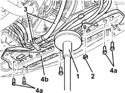
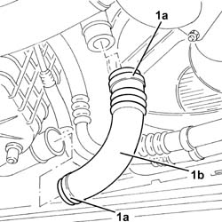
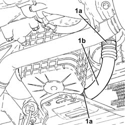

1048A58 HOSE between lower RESONATOR and turbocharger INLET PIPE - R.R.
- Path
- Procedures > 10 ENGINE > 1048 ENGINE AIR SUPPLY CIRCUIT > 1048A vacuum air circuit > 1048A58 HOSE between lower RESONATOR and turbocharger INLET PIPE - R.R.
- Kind
- repair procedure (removal / refitting; the operation number is the code)
- Applies to
- engines: 1.9 JTD 8v , 1.9 JTD 16v, 2.4 JTD 10v; all production periods
- Interactive page
- https://sloeber94.github.io/elrnDB-a156/en/#/3237787
Applies to: engines: 1.9 JTD 8v ; all production periods; only with equipment: Euro 3
 Removing
Removing
 Refitting
RefittingPosition the vehicle on the ramp.
Proceed with the removal 7055B54 under-engine guard - r r .
1. Position a hydraulic jack under the radiator lower crossmember.
2. Undo the nuts securing the power steering pipes brackets to the radiator lower crossmember.
3. Release the air conditioning system pipes from the band on the lower radiator crossmember.
4. Undo the bolts (4a) and remove the radiator lower crossmember (4b).

Applies to: engines: 1.9 JTD 8v ; all production periods; only with equipment: Euro 3
1. Slacken the bands (1a) and remove the hose between the lower resonator and inlet pipe to the turbocharger (1b).

Applies to: engines: 1.9 JTD 8v ; all production periods; only with equipment: Euro 3
Refitting
RemovingRefit in its seating the hose between the lower resonator and inlet pipe to the turbocharger, and secure it with its bands.
Place the lower radiator crossmember back in its housing and secure it using the bolts.
Remove the hydraulic jack supporting the radiator lower crossmember.
Fix the air conditioning system pipes to the bands on the radiator lower crossmember.
Tighten the nuts securing the power steering pipes brackets to the radiator lower crossmember.
Proceed with the refitting 7055B54 under-engine guard - r r .
Remove the car from the ramp.
Applies to: engines: 2.4 JTD 10v; all production periods; only with equipment: Euro 3
Removing
RefittingPosition the vehicle on the ramp.
Proceed with the removal 7055B54 under-engine guard - r r .
1. Position a hydraulic jack under the radiator lower crossmember.
2. Undo the nuts securing the power steering pipes brackets to the radiator lower crossmember.
3. Release the air conditioning system pipes from the band on the lower radiator crossmember.
4. Undo the bolts (4a) and remove the radiator lower crossmember (4b).
Applies to: engines: 2.4 JTD 10v; all production periods; only with equipment: Euro 3
1. Slacken the bands (1a) and remove the hose between the lower resonator and inlet pipe to the turbocompressor (1b).
Applies to: engines: 2.4 JTD 10v; all production periods; only with equipment: Euro 3
Refitting
RemovingRefit in its seating the hose between the lower resonator and inlet pipe to the turbocharger, and fix it with the bands.
Place the lower radiator crossmember back in its housing and secure it using the bolts.
Remove the hydraulic jack supporting the radiator lower crossmember.
Fix the air conditioning system pipes to the band on the radiator lower crossmember.
Tighten the nuts securing the power steering pipes bracket to the radiator lower crossmember.
Proceed with the refitting 7055B54 under-engine guard - r r .
Remove the car from the ramp.
Applies to: engines: 1.9 JTD 16v; all production periods
Removing
RefittingPosition the vehicle on the ramp.
Proceed with removal 7055B54 under-engine guard - r r .
1. Slacken the bands (1a) and remove the hose between the lower resonator and inlet pipe to the turbocompressor (1b).

Applies to: engines: 1.9 JTD 16v; all production periods
Refitting
RemovingRefit the hose between the lower resonator and inlet pipe to the turbocharger, and fix it with the bands.
Proceed with refitting 7055B54 under-engine guard - r r .
Remove the car from the ramps.